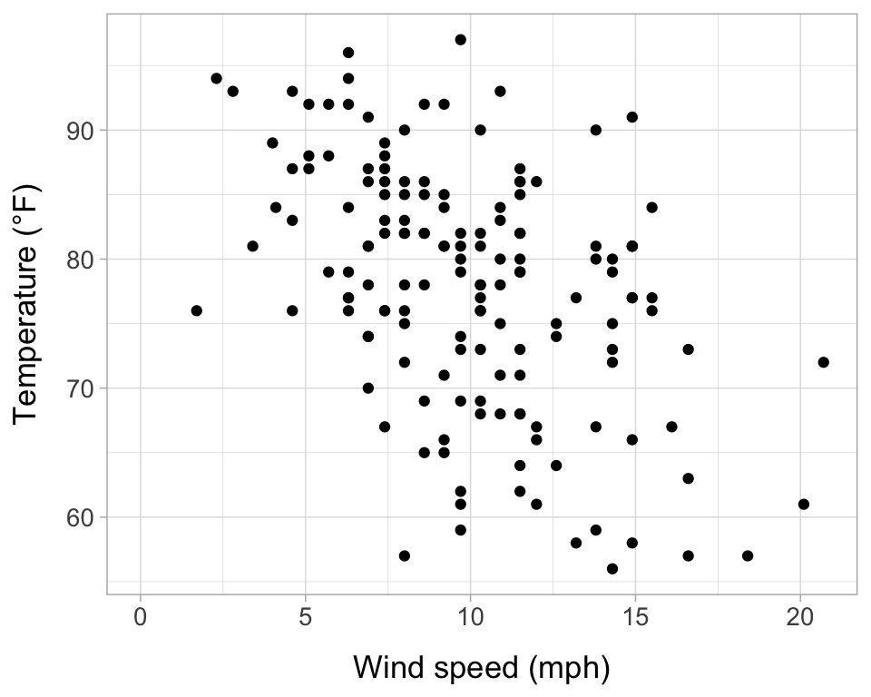

I am an aspiring marine ecologist with a strong interest in sustainable fisheries and aquaculture. I am especially passionate about using mathematical and statistical models to understand aquatic ecosystems, support sustainable fisheries management, and advance the kelp and shellfish aquaculture industries. I am currently a senior at Clark University, where I am majoring in Biology with a minor in Mathematics. After graduating with my B.A. in December 2024, I will start my PhD in Marine Biology at the University of Maine. I am one of the team captains for the Clark cross-country team and am excited to continue my athletic as well as academic career by competing on the UMaine track and cross-country teams as a graduate student.
A major focus of my research is enhancing the accuracy of kelp (Saccharina latissima) growth models by incorporating factors such as blade erosion, biofouling, genetic variation, and phenotypic plasticity. Additionally, I am collaborating with the NOAA Northeast Fisheries Science Center to model spatial variation in crustacean size-at-maturity, supporting the sustainable management of the emerging Jonah crab fishery in New England.
Develop a more solid theoretical understanding of the concepts underlying the modeling techniques I frequently use in my research
Learn new techniques for model selection and inference (e.g., practice cross-validation)
Become more familiar with distributions/models that can address common issues in ecological analyses, such as zero-inflated and hurdle models
3) Plot air quality data
ggplot(air)+geom_point(aes(x=wind, y=temp))+theme_light()+#define custom theme for ggplotstheme(axis.title.y =element_text(margin =margin(t =0, r =10, b =0, l =0)),axis.title.x =element_text(margin =margin(t =10, r =0, b =0, l =0)),text=element_text(size=13))+labs(x="Wind speed (mph)", y="Temperature (°F)")+xlim(0,NA)

Figure 1: Avg. wind speed (mph) and max. daily temperature (°F) at LaGuardia Airport, NY, from May-Sept. 1973